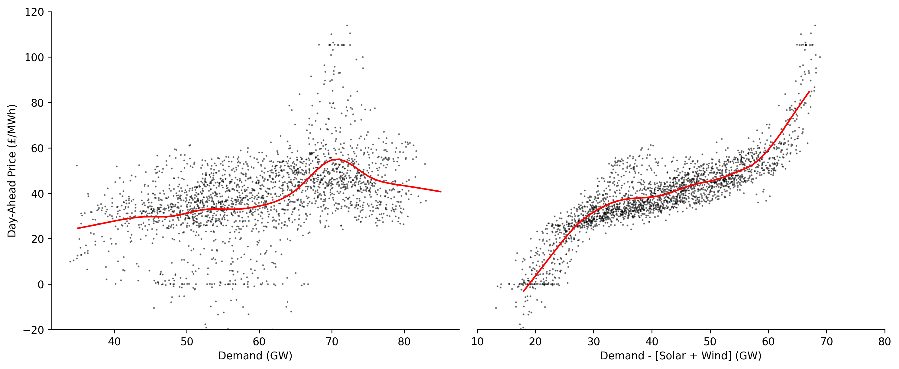

Lowess¶
Outlines the development of the Scikit-Learn compatible Lowess model, as well as its extension LowessDates used for time-adaptive LOWESS regression. Included are functions for extending both models to generate prediction and confidence intervals.
Imports¶
#exports
import pandas as pd
import numpy as np
import seaborn as sns
import matplotlib.pyplot as plt
from collections.abc import Iterable
from sklearn import linear_model
from sklearn.base import BaseEstimator, RegressorMixin
from scipy.optimize import minimize
from scipy import linalg
from timeit import timeit
from ipypb import track
from moepy import eda
LOWESS Development¶
Before we go ahead any further we'll create some sample data for fitting and also define the fraction of the data over which we'll do the localised regression.
x = np.linspace(0, 5, num=26)
y = np.sin(x)
frac = 0.5
We can see that we've just created a simple sin curve
plt.plot(x, y)
[<matplotlib.lines.Line2D at 0x1a4b2c4ae80>]

Weights¶
In order to do localised regression we need to know what points are local, for this reason we'll start by creating a function for calculating the distance between one point and all of the other points
#exports
get_dist = lambda X, x: np.abs(X - x)
dist = get_dist(x, x[0])
dist
array([0. , 0.2, 0.4, 0.6, 0.8, 1. , 1.2, 1.4, 1.6, 1.8, 2. , 2.2, 2.4,
2.6, 2.8, 3. , 3.2, 3.4, 3.6, 3.8, 4. , 4.2, 4.4, 4.6, 4.8, 5. ])
We've defined our selection of local based on the fraction of surrounding data, this means we need to calculate the distance around any given point that contains the fraction of data specified
#exports
def get_dist_threshold(dist, frac=0.4):
"""Identifies the minimum distance that contains the desired data fraction"""
frac_idx = int(np.ceil(len(dist)*frac))
dist_threshold = sorted(dist)[frac_idx]
return dist_threshold
dist_threshold = get_dist_threshold(dist, frac=frac)
dist_threshold
2.6
We'll now define a function that will map from the distances to their relative weights according to a tricube kernel
#exports
dist_to_weights = lambda dist, dist_threshold=1: (1 - ((np.abs(dist)/dist_threshold).clip(0, 1) ** 3)) ** 3
dist_threshold = 5
dist_sample = np.linspace(0, 10)
weights_sample = dist_to_weights(dist_sample, dist_threshold)
# Plotting
plt.plot(dist_sample, weights_sample)
plt.xlabel('Distance')
plt.ylabel('Weight')
plt.xlim(0, max(dist_sample))
plt.ylim(0, 1.1)
(0.0, 1.1)

We can now use the distance matrix and threshold to create a vector of the relative weights of all data points for the local regression at a specified location
weights = dist_to_weights(dist, dist_threshold)
weights
array([1. , 0.99980801, 0.99846479, 0.99482495, 0.98776226,
0.97619149, 0.95909867, 0.93557909, 0.90488204, 0.86646079,
0.82002586, 0.76559882, 0.70356317, 0.63470792, 0.56025877,
0.4818903 , 0.40171203, 0.32221935, 0.24619951, 0.17658114,
0.11621427, 0.06756635, 0.03231788, 0.01083964, 0.00153137,
0. ])
We'll wrap these steps into a single function and see how long it takes to compute
def get_weights(x, loc, frac=0.4):
"""Calculates the weightings at each data point for a single localised regression"""
dist = get_dist(x, loc)
dist_threshold = get_dist_threshold(dist, frac=frac)
weights = dist_to_weights(dist, dist_threshold)
return weights
timeit(lambda: get_weights(x, x[5]), number=10000)
0.39384629999999987
We've successfully calculated the weights with respect to a single point but we need to repeat this across each of value locations in our dataset.
#exports
def get_all_weights(x, frac=0.4):
"""Calculates the weightings at each data point for a LOWESS regression"""
all_weights = []
for i in range(len(x)):
weights = get_weights(x, x[i], frac=frac)
all_weights += [weights]
all_weights = np.array(all_weights)
return all_weights
all_weights = get_all_weights(x, frac=frac)
all_weights[:5, :5]
array([[1. , 0.99863512, 0.98911574, 0.96358278, 0.91512916],
[0.99826489, 1. , 0.99826489, 0.98617531, 0.95385361],
[0.98207661, 0.99774775, 1. , 0.99774775, 0.98207661],
[0.92116732, 0.97619149, 0.997003 , 1. , 0.997003 ],
[0.75907091, 0.89295331, 0.96743815, 0.99589042, 1. ]])
Not too bad at all, we could now use this to weight the fitting of the polynomials in the LOWESS. However, we've carried out most of these operations as part of for loops over vectors, what if we could store our data in matrices and do single operations over them?
Thankfully Numpy has lots of helpful functions to aid us in this. We'll start by creating a matrix with the distances, to do this we can reshape the vectors into matrices of shape (25, 1) and (1, 25), then deduct the matrix with only one row from the matrix with only one column.
#exports
vector_to_dist_matrix = lambda x: np.abs(x.reshape(-1, 1) - x.reshape(1, -1))
dist_matrix = vector_to_dist_matrix(x)
# Plotting
fig, ax = plt.subplots(dpi=150)
sns.heatmap(dist_matrix, cmap='cool', cbar_kws={'label':'Distance'}, ax=ax)
ax.set_xlabel('Data Point')
ax.set_ylabel('Regression Nodes')
Text(69.58333333333334, 0.5, 'Regression Nodes')
This approach brings an order of magnitude speed-up to the operation
%%timeit
timeit(lambda: [get_dist(x, x[x_idx]) for x_idx in range(len(x))], number=10000)
672 ms ± 10.4 ms per loop (mean ± std. dev. of 7 runs, 1 loop each)
%%timeit
timeit(lambda: vector_to_dist_matrix(x), number=10000)
43.4 ms ± 2.63 ms per loop (mean ± std. dev. of 7 runs, 10 loops each)
Now we need to calculate the distance threshold (max distance away from point of interest that is within the data fraction specified).
Alexandre Gramfort lays out one approach to determine the distances using a list comprehension.
#exports
get_frac_idx = lambda x, frac: int(np.ceil(len(x) * frac)) - 1
gramfort_get_dist_thresholds = lambda x, frac_idx: [np.sort(np.abs(x - x[i]))[frac_idx] for i in range(len(x))]
frac_idx = get_frac_idx(x, frac)
timeit(lambda: gramfort_get_dist_thresholds(x, frac_idx), number=10000)
1.3339513000000007
Pretty quick, lets see if we could do better though.
We'll try keeping the distance matrix intact rather than breaking it up in each iteration. This enables us to do the absolute conversion, sorting and indexing over a matrix rather than looping the operations over vectors.
These changes gave us an order of magnitude speed-up.
#exports
get_dist_thresholds = lambda x, frac_idx, dist_matrix: np.sort(dist_matrix)[:, frac_idx]
dist_thresholds = get_dist_thresholds(x, frac_idx, dist_matrix)
timeit(lambda: get_dist_thresholds(x, frac_idx, dist_matrix), number=10000)
0.06741010000000003
Now we have both the distance matrix and thresholds we can start to calculate the weightings, the first step to this is scale and clip the distances based on their threshold values.
inv_linear_weights = np.clip(dist_matrix/dist_thresholds.reshape(-1, 1), 0, 1)
inv_linear_weights[:5, :5]
array([[0. , 0.08333333, 0.16666667, 0.25 , 0.33333333],
[0.09090909, 0. , 0.09090909, 0.18181818, 0.27272727],
[0.2 , 0.1 , 0. , 0.1 , 0.2 ],
[0.33333333, 0.22222222, 0.11111111, 0. , 0.11111111],
[0.5 , 0.375 , 0.25 , 0.125 , 0. ]])
We can now calculate the tri-cubic weighting. We repeat this using both base Python and Numpy to see which is faster, surprisingly base Python comes out on top.
timeit(lambda: (1 - inv_linear_weights ** 3) ** 3, number=10000)
0.2501098000000006
timeit(lambda: np.power(1 - np.power(inv_linear_weights, 3), 3), number=10000)
0.24560150000000114
After a little more exploration it appears that Numpy's power function only offers improvements over base Python when the exponent is very high. For a good discussion on why this is the case you can read more here.
timeit(lambda: (1 - inv_linear_weights ** 50000) ** 50000, number=10000)
0.28330940000000027
timeit(lambda: np.power(1 - np.power(inv_linear_weights, 50000), 50000), number=10000)
0.2943747000000023
We'll now wrap these two steps up into a single function
#exports
def clean_weights(weights):
"""Normalises each models weightings and removes non-finite values"""
with np.errstate(divide='ignore', invalid='ignore'):
weights = weights/weights.sum(axis=0) # We'll then normalise the weights so that for each model they sum to 1 for a single data point
weights = np.where(~np.isfinite(weights), 0, weights) # And remove any non-finite values
return weights
def dist_2_weights_matrix(dist_matrix, dist_thresholds):
"""Converts distance matrix and thresholds to weightings"""
weights = dist_to_weights(dist_matrix, dist_thresholds.reshape(-1, 1))
weights = clean_weights(weights)
return weights
weights = dist_2_weights_matrix(dist_matrix, dist_thresholds)
weights[:5, :5]
array([[0.20861363, 0.18398963, 0.16064453, 0.13720751, 0.11473407],
[0.20814378, 0.18430943, 0.16252964, 0.14126726, 0.12082652],
[0.20364685, 0.18375705, 0.16289653, 0.14341436, 0.1254292 ],
[0.18628223, 0.17830797, 0.16222709, 0.14384546, 0.12796029],
[0.13975483, 0.15666172, 0.15537944, 0.14300426, 0.12848832]])
And then combine them with the creation of the distance matrix and threshold
#exports
def get_full_dataset_weights_matrix(x, frac=0.4):
"""Wrapper for calculating weights from the raw data and LOWESS fraction"""
frac_idx = get_frac_idx(x, frac)
dist_matrix = vector_to_dist_matrix(x)
dist_thresholds = get_dist_thresholds(x, frac_idx, dist_matrix)
weights = dist_2_weights_matrix(dist_matrix, dist_thresholds)
return weights
weights = get_full_dataset_weights_matrix(x, frac)
We'll do a quick visual check to see if they look reasonable
weights[:5, :5]
array([[0.20861363, 0.18398963, 0.16064453, 0.13720751, 0.11473407],
[0.20814378, 0.18430943, 0.16252964, 0.14126726, 0.12082652],
[0.20364685, 0.18375705, 0.16289653, 0.14341436, 0.1254292 ],
[0.18628223, 0.17830797, 0.16222709, 0.14384546, 0.12796029],
[0.13975483, 0.15666172, 0.15537944, 0.14300426, 0.12848832]])
Looks good, we'll also time it
timeit(lambda: get_full_dataset_weights_matrix(x, frac=frac), number=10000)
1.0831957999999986
Currently we have created a weights matrix that scales in size as the square of the dataset length, this could quickly become prohibitively computationally expensive for large datasets.
Instead we'll create a new function that lets us either specify a vector of locations (reg_anchors) where the regressions will be centered, or alternatively if num_fits is passed that will be the number of local regressions.
#exports
num_fits_2_reg_anchors = lambda x, num_fits: np.linspace(x.min(), x.max(), num=num_fits)
def get_weighting_locs(x, reg_anchors=None, num_fits=None):
"""Identifies the weighting locations for the provided dataset"""
num_type_2_dist_rows = {
type(None) : lambda x, num_fits: x.reshape(-1, 1),
int : lambda x, num_fits: num_fits_2_reg_anchors(x, num_fits).reshape(-1, 1),
}
if reg_anchors is None:
weighting_locs = num_type_2_dist_rows[type(num_fits)](x, num_fits)
else:
weighting_locs = reg_anchors.reshape(-1, 1)
return weighting_locs
def create_dist_matrix(x, reg_anchors=None, num_fits=None):
"""Constructs the distance matrix for the desired weighting locations"""
weighting_locs = get_weighting_locs(x, reg_anchors=reg_anchors, num_fits=num_fits)
dist_matrix = np.abs(weighting_locs - x.reshape(1, -1))
return dist_matrix
dist_matrix = create_dist_matrix(x)
dist_matrix.shape
(26, 26)
When neither reg_anchors nor num_fits are passed it defaults to using all data-points in the matrix which can be seen below
dist_thresholds = get_dist_thresholds(x, frac_idx, dist_matrix)
weights = dist_2_weights_matrix(dist_matrix, dist_thresholds)
# Plotting
fig, ax = plt.subplots(dpi=150)
sns.heatmap(weights, cmap='cool', cbar_kws={'label':'Weights'}, ax=ax)
ax.set_xlabel('Data Point')
ax.set_ylabel('Regression Nodes')
Text(69.58333333333334, 0.5, 'Regression Nodes')

However if we specify num_fits as 10 we can see that only 10 regression nodes are defined in the weights matrix
num_fits = 10
dist_matrix = create_dist_matrix(x, num_fits=num_fits)
dist_thresholds = get_dist_thresholds(x, frac_idx, dist_matrix)
weights = dist_2_weights_matrix(dist_matrix, dist_thresholds)
# Plotting
fig, ax = plt.subplots(dpi=150)
sns.heatmap(weights, cmap='cool', cbar_kws={'label':'Weights'}, ax=ax)
ax.set_xlabel('Data Point')
ax.set_ylabel('Regression Nodes')
Text(69.58333333333334, 0.5, 'Regression Nodes')

But what about if you were only really interested in getting highly localised regressions for a specific part of your variable space? Using the reg_anchors variable we can now specify our own grid over which to carry out the regressions.
reg_anchors = np.array([0, 0.25, 0.5, 0.75, 1, 1.25, 1.5, 1.75, 2, 2.5, 3, 3.5, 4, 4.5, 5])
dist_matrix = create_dist_matrix(x, reg_anchors=reg_anchors)
dist_thresholds = get_dist_thresholds(x, frac_idx, dist_matrix)
weights = dist_2_weights_matrix(dist_matrix, dist_thresholds)
# Plotting
fig, ax = plt.subplots(dpi=150)
sns.heatmap(weights, cmap='cool', cbar_kws={'label':'Weights'}, ax=ax)
ax.set_xlabel('Data Point')
ax.set_ylabel('Regression Nodes')
Text(69.58333333333334, 0.5, 'Regression Nodes')
We'll wrap these steps up in a couple of functions and add in some syntactic sugar to allow the user to more flexibily specify the distance matrix kwargs
#exports
def get_weights_matrix(x, frac=0.4, weighting_locs=None, reg_anchors=None, num_fits=None):
"""Wrapper for calculating weights from the raw data and LOWESS fraction"""
frac_idx = get_frac_idx(x, frac)
if weighting_locs is not None:
dist_matrix = np.abs(weighting_locs - x.reshape(1, -1))
else:
dist_matrix = create_dist_matrix(x, reg_anchors=reg_anchors, num_fits=num_fits)
dist_thresholds = get_dist_thresholds(x, frac_idx, dist_matrix)
weights = dist_2_weights_matrix(dist_matrix, dist_thresholds)
return weights
weights = get_weights_matrix(x, frac=0.5, reg_anchors=reg_anchors)
# Plotting
fig, ax = plt.subplots(dpi=150)
sns.heatmap(weights, cmap='cool', cbar_kws={'label':'Weights'}, ax=ax)
ax.set_xlabel('Data Point')
ax.set_ylabel('Regression Nodes')
Text(69.58333333333334, 0.5, 'Regression Nodes')

We'll check this still works when we want to carry out a LOWESS fit over all points
weights = get_weights_matrix(x, frac=frac)
print(weights.shape)
# Plotting
fig, ax = plt.subplots(dpi=150)
sns.heatmap(weights, cmap='cool', cbar_kws={'label':'Weights'}, ax=ax)
ax.set_xlabel('Data Point')
ax.set_ylabel('Regression Nodes')
(26, 26)
Text(69.58333333333334, 0.5, 'Regression Nodes')

Regression¶
Now that we've calculated the weightings necessary for local regression we need to create the regression functions. We'll start by calculating the intercept and gradient of a linear regression fit with optional weighting.
N.b. This section of the code was heavily inspired by this gist created by Alexandere Gramfort
#exports
def calc_lin_reg_betas(x, y, weights=None):
"""Calculates the intercept and gradient for the specified local regressions"""
if weights is None:
weights = np.ones(len(x))
b = np.array([np.sum(weights * y), np.sum(weights * y * x)])
A = np.array([[np.sum(weights), np.sum(weights * x)],
[np.sum(weights * x), np.sum(weights * x * x)]])
betas = np.linalg.lstsq(A, b, rcond=None)[0]
return betas
intercept, gradient = calc_lin_reg_betas(x, y)
# Plotting
fig, ax = plt.subplots(dpi=150)
ax.plot(x, y, label='Original')
ax.plot([x.min(), x.max()], [intercept+gradient*x.min(), intercept+gradient*x.max()], label='Linear Regression')
ax.legend(frameon=False)
eda.hide_spines(ax)

We'll now repeat the regression calculation but will also specify a weighting for each data-point
row_weights = weights[14, :]
intercept, gradient = calc_lin_reg_betas(x, y, row_weights)
x_used = x[x*row_weights>0]
y_used = y[x*row_weights>0]
x_weights = row_weights[x*row_weights>0]
## Plotting
fig, ax = plt.subplots(dpi=250, figsize=(7, 4))
weighted_points = ax.scatter(x, y, s=(row_weights)*300, c=row_weights, edgecolor='k', cmap='gray_r', label='Points Used', zorder=3, vmin=0)
cbar = fig.colorbar(weighted_points, label='Point Weighting')
ax.plot(x, y, label='Original')
ax.plot([x.min(), x.max()], [intercept+gradient*x.min(), intercept+gradient*x.max()], label='Linear Regression')
ax.set_ylim(-1.2, 1.2)
eda.hide_spines(ax)
leg = ax.legend(frameon=False)
fig.savefig('../img/LOWESS_single_regression_example.png', dpi=250)

We can repeat this for all data-points, the error being minimized across these regressions is shown in the equation below
n = len(x)
y_pred = np.zeros(n)
for i in range(n):
row_weights = weights[i, :]
betas = calc_lin_reg_betas(x, y, weights[i, :])
y_pred[i] = betas[0] + betas[1] * x[i]
plt.plot(x, y, label='Original')
plt.plot(x, y_pred, label='LOWESS')
plt.legend(frameon=False)
<matplotlib.legend.Legend at 0x1a4b3a23310>

Whilst this fit doesn't look great remember we can reduce the fraction of data used in each fit to get a more localised regression, in this example we'll also make use of the num_fits parameter to reduce the number of computations that are run.
num_fits = 10
weights = get_weights_matrix(x, frac=0.2, num_fits=num_fits)
x_pred = num_fits_2_reg_anchors(x, num_fits).reshape(-1, 1)
y_pred = np.zeros(len(x_pred))
for i in range(len(x_pred)):
row_weights = weights[i, :]
betas = calc_lin_reg_betas(x, y, row_weights)
y_pred[i] = betas[0] + betas[1] * x_pred[i]
plt.plot(x, y, label='Original')
plt.plot(x_pred, y_pred, label='LOWESS')
plt.legend(frameon=False)
<matplotlib.legend.Legend at 0x1a4b3a85760>

Rather than carrying out the regression fitting and prediction together we'll seperate them to add some flexibility, for example we wouldnt be able to make predictions with a specified number of polynomial fits using the code we just wrote.
For this fitting function we'll introduce a design matrix which will hold the coefficients for all of our regressions. We'll also make the function used for regression a parameter, this will allow us to replace it with other regression functions (e.g. polynomials) later on.
#exports
check_array = lambda array, x: np.ones(len(x)) if array is None else array
def fit_regressions(x, y, weights=None, reg_func=calc_lin_reg_betas, num_coef=2, **reg_params):
"""Calculates the design matrix for the specified local regressions"""
if weights is None:
weights = np.ones(len(x))
n = weights.shape[0]
y_pred = np.zeros(n)
design_matrix = np.zeros((n, num_coef))
for i in range(n):
design_matrix[i, :] = reg_func(x, y, weights=weights[i, :], **reg_params)
return design_matrix
weights = get_weights_matrix(x, frac=0.4, num_fits=10)
design_matrix = fit_regressions(x, y, weights)
design_matrix
array([[ 0.05905438, 0.73999059],
[ 0.08020775, 0.6991559 ],
[ 0.35324949, 0.41467757],
[ 1.09720376, -0.10762239],
[ 2.03581046, -0.58348682],
[ 2.77888971, -0.88141726],
[ 2.91594092, -0.92733431],
[ 2.05244287, -0.68647646],
[ 0.84017439, -0.38519789],
[ 0.6033549 , -0.33232683]])
We can use this design matrix to create predictions for every local regression, then combine them based on their weightings
#exports
def lowess_fit_and_predict(x, y, frac=0.4, reg_anchors=None, num_fits=None, x_pred=None):
"""Fits and predicts smoothed local regressions at the specified locations"""
weighting_locs = get_weighting_locs(x, reg_anchors=reg_anchors, num_fits=num_fits)
weights = get_weights_matrix(x, frac=frac, weighting_locs=weighting_locs)
design_matrix = fit_regressions(x, y, weights)
if x_pred is None:
x_pred = x
point_evals = design_matrix[:, 0] + np.dot(x_pred.reshape(-1, 1), design_matrix[:, 1].reshape(1, -1))
pred_weights = get_weights_matrix(x_pred, frac=frac, reg_anchors=weighting_locs)
y_pred = np.multiply(pred_weights, point_evals.T).sum(axis=0)
return y_pred
x = np.linspace(0, 5, num=26)
y = np.sin(x)
y_pred = lowess_fit_and_predict(x, y)
plt.plot(x, y, label='Original')
plt.plot(x, y_pred, '--', label='LOWESS')
plt.legend(frameon=False)
<matplotlib.legend.Legend at 0x1a4b3aefd30>

If we pass an array to the x_pred parameter then those values will be used as the locations of the output predictions
x_pred = np.array([0, 1, 1.5, 2, 3, 4, 5])
y_pred = lowess_fit_and_predict(x, y, num_fits=10, x_pred=x_pred)
plt.plot(x, y, label='Original')
plt.plot(x_pred, y_pred, '--', label='LOESS')
plt.legend(frameon=False)
<matplotlib.legend.Legend at 0x1a4b3b48e80>
Lets do some time tests, starting with a small dataset
x = np.linspace(0, 5, num=26)
y = np.sin(x)
%%timeit
y_pred = lowess_fit_and_predict(x, y)
2.02 ms ± 57.2 µs per loop (mean ± std. dev. of 7 runs, 100 loops each)
Even with larger datasets it remains performant
x = np.linspace(0, 5, num=3000)
y = np.sin(x)
frac = 0.1
x_pred = np.linspace(0, 5, 100)[1:] # to avoid divide by zero in MAPE calc
%%timeit
y_pred = lowess_fit_and_predict(x, y, frac=frac, x_pred=x_pred)
989 ms ± 21.6 ms per loop (mean ± std. dev. of 7 runs, 1 loop each)
When making predictions with large datasets and low fractions we can achieve low error for the simple sin curve fitting example
y_pred = lowess_fit_and_predict(x, y, frac=frac, x_pred=x_pred)
y_true = np.sin(x_pred)
print(f'MAPE: {round(100*np.abs((y_true-y_pred)/y_true).mean(), 3)}%')
MAPE: 0.084%
LOWESS on Real-World Data¶
We'll now evaluate the LOWESS fit on some real data, we'll start by loading the electric insights dataset
%%time
df_EI = eda.load_EI_df('../data/raw/electric_insights.csv')
df_EI.head()
Wall time: 1.86 s
| local_datetime | day_ahead_price | SP | imbalance_price | valueSum | temperature | TCO2_per_h | gCO2_per_kWh | nuclear | biomass | coal | ... | demand | pumped_storage | wind_onshore | wind_offshore | belgian | dutch | french | ireland | northern_ireland | irish |
|---|---|---|---|---|---|---|---|---|---|---|---|---|---|---|---|---|---|---|---|---|---|
| 2009-01-01 00:00:00+00:00 | 58.05 | 1 | 74.74 | 74.74 | -0.6 | 21278 | 555 | 6.973 | 0 | 17.65 | ... | 38.329 | -0.404 | nan | nan | 0 | 0 | 1.977 | 0 | 0 | -0.161 |
| 2009-01-01 00:30:00+00:00 | 56.33 | 2 | 74.89 | 74.89 | -0.6 | 21442 | 558 | 6.968 | 0 | 17.77 | ... | 38.461 | -0.527 | nan | nan | 0 | 0 | 1.977 | 0 | 0 | -0.16 |
| 2009-01-01 01:00:00+00:00 | 52.98 | 3 | 76.41 | 76.41 | -0.6 | 21614 | 569 | 6.97 | 0 | 18.07 | ... | 37.986 | -1.018 | nan | nan | 0 | 0 | 1.977 | 0 | 0 | -0.16 |
| 2009-01-01 01:30:00+00:00 | 50.39 | 4 | 37.73 | 37.73 | -0.6 | 21320 | 578 | 6.969 | 0 | 18.022 | ... | 36.864 | -1.269 | nan | nan | 0 | 0 | 1.746 | 0 | 0 | -0.16 |
| 2009-01-01 02:00:00+00:00 | 48.7 | 5 | 59 | 59 | -0.6 | 21160 | 585 | 6.96 | 0 | 17.998 | ... | 36.18 | -1.566 | nan | nan | 0 | 0 | 1.73 | 0 | 0 | -0.16 |
We'll start by extracting the X and y data
y_col = 'day_ahead_price'
X_cols = ['demand']
yX = df_EI['2020':][[y_col]+X_cols].dropna().values
y = yX[:, 0]
X = yX[:, 1:]
print(y.shape, X.shape)
(17435,) (17435, 1)
We'll then fit the model and make the prediction
%%time
x = X[:, 0]
x_pred = np.linspace(15, 55, 41)
y_pred = lowess_fit_and_predict(x, y, frac=0.4, num_fits=25, x_pred=x_pred)
Wall time: 63 ms
And now we can plot the results!
fig, ax = plt.subplots(dpi=150)
ax.plot(x_pred, y_pred, c='r')
ax.scatter(x, y, s=0.1, c='k', alpha=0.25)
ax.set_ylim(0, 100)
ax.set_xlim(15, 55)
eda.hide_spines(ax)
ax.set_xlabel('Demand (GW)')
ax.set_ylabel('Day-Ahead Price (£/MWh)')
Text(0, 0.5, 'Day-Ahead Price (£/MWh)')

Robust Regression¶
What we've done so far is ultimately nothing more than an extension of linear regression, which has been achieved by fitting multiple regressions and manipulating the weighting of the data points used in each one.
x = np.linspace(0, 5, num=26)
y = np.sin(x)
x_pred = np.linspace(0, 5, 100)
y_pred = lowess_fit_and_predict(x, y, num_fits=5, x_pred=x_pred)
plt.plot(x, y)
plt.plot(x_pred, y_pred, '--')
[<matplotlib.lines.Line2D at 0x1a4b2f9e160>]

But we can also do much more with the weights, including adjusting them to make our regression more robust against outliers. First we'll create a new dataset which has some noise.
x = np.linspace(0, 5, num=150)
weights = get_weights_matrix(x, frac=0.2)
y = np.sin(x)
y_noisy = y + (np.random.normal(size=len(y)))/10
y_noisy[25] = 2
y_noisy[50] = -2
y_noisy[75] = 2
plt.plot(x, y, label='Original', zorder=2)
plt.scatter(x, y_noisy, label='With Noise', color='C1', s=5, zorder=1)
plt.legend(frameon=False)
<matplotlib.legend.Legend at 0x1a4b39dc310>

We can use our lowess_fit_and_predict function to make a lowess model of this data
y_pred = lowess_fit_and_predict(x, y_noisy, frac=0.2, num_fits=25)
plt.plot(x, y, label='Original', zorder=2)
plt.plot(x, y_pred, '--', label='LOWESS', color='k', zorder=3)
plt.scatter(x, y_noisy, label='With Noise', color='C1', s=5, zorder=1)
plt.legend(frameon=False)
<matplotlib.legend.Legend at 0x1a4b3a630d0>

The issue though is that our model is being highly skewed by the outliers present in the data, robust regression provides a method to handle this (some improvements can also be made by increasing the frac value). To carry it out we need to repeat the lowess fit, but when we do we must further weight the data-points to minimize the influence of outliers.
Robust regression is an iterative procedure that seeks to identify outliers and minimize their impact on the coefficient estimates - NCSS Cleveland, W. S. (1979) in his paper 'Robust Locally Weighted Regression and Smoothing Scatterplots' outlines a procedure for carrying out robust lowess regression that we will use here.
We'll start by calculating the standard deviation of the residuals.
residuals = y_noisy - y_pred
std_dev = np.quantile(np.abs(residuals), 0.682)
std_dev
0.13459575203567298
We can then define a threshold, say 6 standard deviations, and clip any values outside of that. We're left with a cleaned version of the residuals.
max_std_dev = 6
cleaned_residuals = np.clip(residuals / (max_std_dev * std_dev), -1, 1)
# Plotting
fig, axs = plt.subplots(dpi=150, ncols=2, figsize=(10, 4))
ax = axs[0]
sns.histplot(residuals, ax=ax)
ax.set_title('Residuals')
ax = axs[1]
sns.histplot(cleaned_residuals, ax=ax)
ax.set_xlim(-1, 1)
ax.set_title('Cleaned Residuals')
for ax in axs:
eda.hide_spines(ax)
In the last step we clipped all of our values from -1 to +1, that means if we square our values and deduct them from 1 any outliers will go to 0. The returned vector we'll call the robust_weights.
robust_weights = (1 - cleaned_residuals ** 2) ** 2
# Plotting
fig, ax = plt.subplots(dpi=150)
sns.histplot(robust_weights, ax=ax)
ax.set_xlim(0, 1)
eda.hide_spines(ax)

Before we move on we'll combine these into a single step for calculating the robust_weights
#exports
def calc_robust_weights(y, y_pred, max_std_dev=6):
"""Calculates robustifying weightings that penalise outliers"""
residuals = y - y_pred
std_dev = np.quantile(np.abs(residuals), 0.682)
cleaned_residuals = np.clip(residuals / (max_std_dev * std_dev), -1, 1)
robust_weights = (1 - cleaned_residuals ** 2) ** 2
return robust_weights
We'll now refactor our previous lowess_fit_and_predict but this time will enable it to carry out robust regressions
#exports
def robust_lowess_fit_and_predict(x, y, frac=0.4, reg_anchors=None, num_fits=None, x_pred=None, robust_weights=None, robust_iters=3):
"""Fits and predicts robust smoothed local regressions at the specified locations"""
# Identifying the initial loading weights
weighting_locs = get_weighting_locs(x, reg_anchors=reg_anchors, num_fits=num_fits)
loading_weights = get_weights_matrix(x, frac=frac, weighting_locs=weighting_locs)
# Robustifying the weights (to reduce outlier influence)
if robust_weights is None:
robust_loading_weights = loading_weights
else:
robust_loading_weights = np.multiply(robust_weights, loading_weights)
with np.errstate(divide='ignore', invalid='ignore'):
robust_loading_weights = robust_loading_weights/robust_loading_weights.sum(axis=0)
robust_loading_weights = np.where(~np.isfinite(robust_loading_weights), 0, robust_loading_weights)
# Fitting the model and making predictions
design_matrix = fit_regressions(x, y, robust_loading_weights)
if x_pred is None:
x_pred = x
point_evals = design_matrix[:, 0] + np.dot(x_pred.reshape(-1, 1), design_matrix[:, 1].reshape(1, -1))
pred_weights = get_weights_matrix(x_pred, frac=frac, reg_anchors=weighting_locs)
y_pred = np.multiply(pred_weights, point_evals.T).sum(axis=0)
# Recursive robust regression
robust_weights = calc_robust_weights(y, y_pred)
if robust_iters > 1:
robust_iters -= 1
y_pred = robust_lowess_fit_and_predict(x, y, frac=frac, reg_anchors=reg_anchors, num_fits=num_fits, x_pred=x_pred, robust_weights=robust_weights, robust_iters=robust_iters)
return y_pred
y_pred = robust_lowess_fit_and_predict(x, y_noisy, frac=0.2, num_fits=25)
plt.plot(x, y, label='Original', zorder=2)
plt.plot(x, y_pred, '--', label='Robust LOWESS', color='k', zorder=3)
plt.scatter(x, y_noisy, label='With Noise', color='C1', s=5, zorder=1)
plt.legend(frameon=False)
<matplotlib.legend.Legend at 0x1a4b329c7f0>

We've got everything working nicely but the current way we make predictions doesn't make it easy to plug-and-play with other Python libraries, to reduce this friction we'll refactor the code again and create a Scikit-Learn wrapper for our process.
#exports
class Lowess(BaseEstimator, RegressorMixin):
"""
This class provides a Scikit-Learn compatible model for Locally Weighted
Scatterplot Smoothing, including robustifying procedures against outliers.
For more information on the underlying algorithm please refer to
* William S. Cleveland: "Robust locally weighted regression and smoothing
scatterplots", Journal of the American Statistical Association, December 1979,
volume 74, number 368, pp. 829-836.
* William S. Cleveland and Susan J. Devlin: "Locally weighted regression: An
approach to regression analysis by local fitting", Journal of the American
Statistical Association, September 1988, volume 83, number 403, pp. 596-610.
Example Usage:
```
x = np.linspace(0, 5, num=150)
y = np.sin(x)
y_noisy = y + (np.random.normal(size=len(y)))/10
lowess = Lowess()
lowess.fit(x, y_noisy, frac=0.2)
x_pred = np.linspace(0, 5, 26)
y_pred = lowess.predict(x_pred)
```
Initialisation Parameters:
reg_func: function that accepts the x and y values then returns the intercepts and gradients
Attributes:
reg_func: function that accepts the x and y values then returns the intercepts and gradients
fitted: Boolean flag indicating whether the model has been fitted
frac: Fraction of the dataset to use in each local regression
weighting_locs: Locations of the local regression centers
loading_weights: Weights of each data-point across the localalised models
design_matrix: Regression coefficients for each of the localised models
"""
def __init__(self, reg_func=calc_lin_reg_betas):
self.reg_func = reg_func
self.fitted = False
return
def calculate_loading_weights(self, x, reg_anchors=None, num_fits=None, external_weights=None, robust_weights=None):
"""
Calculates the loading weights for each data-point across the localised models
Parameters:
x: values for the independent variable
reg_anchors: Locations at which to center the local regressions
num_fits: Number of locations at which to carry out a local regression
external_weights: Further weighting for the specific regression
robust_weights: Robustifying weights to remove the influence of outliers
"""
# Calculating the initial loading weights
weighting_locs = get_weighting_locs(x, reg_anchors=reg_anchors, num_fits=num_fits)
loading_weights = get_weights_matrix(x, frac=self.frac, weighting_locs=weighting_locs)
# Applying weight adjustments
if external_weights is None:
external_weights = np.ones(x.shape[0])
if robust_weights is None:
robust_weights = np.ones(x.shape[0])
weight_adj = np.multiply(external_weights, robust_weights)
loading_weights = np.multiply(weight_adj, loading_weights)
# Post-processing weights
with np.errstate(divide='ignore', invalid='ignore'):
loading_weights = loading_weights/loading_weights.sum(axis=0) # normalising
loading_weights = np.where(~np.isfinite(loading_weights), 0, loading_weights) # removing non-finite values
self.weighting_locs = weighting_locs
self.loading_weights = loading_weights
return
def fit(self, x, y, frac=0.4, reg_anchors=None,
num_fits=None, external_weights=None,
robust_weights=None, robust_iters=3, **reg_params):
"""
Calculation of the local regression coefficients for
a LOWESS model across the dataset provided. This method
will reassign the `frac`, `weighting_locs`, `loading_weights`,
and `design_matrix` attributes of the `Lowess` object.
Parameters:
x: values for the independent variable
y: values for the dependent variable
frac: LOWESS bandwidth for local regression as a fraction
reg_anchors: Locations at which to center the local regressions
num_fits: Number of locations at which to carry out a local regression
external_weights: Further weighting for the specific regression
robust_weights: Robustifying weights to remove the influence of outliers
robust_iters: Number of robustifying iterations to carry out
"""
self.frac = frac
# Solving for the design matrix
self.calculate_loading_weights(x, reg_anchors=reg_anchors, num_fits=num_fits, external_weights=external_weights, robust_weights=robust_weights)
self.design_matrix = fit_regressions(x, y, weights=self.loading_weights, reg_func=self.reg_func, **reg_params)
# Recursive robust regression
if robust_iters > 1:
y_pred = self.predict(x)
robust_weights = calc_robust_weights(y, y_pred)
robust_iters -= 1
y_pred = self.fit(x, y, frac=self.frac, reg_anchors=reg_anchors, num_fits=num_fits, external_weights=external_weights, robust_weights=robust_weights, robust_iters=robust_iters, **reg_params)
return y_pred
self.fitted = True
return
def predict(self, x_pred):
"""
Inference using the design matrix from the LOWESS fit
Parameters:
x_pred: Locations for the LOWESS inference
Returns:
y_pred: Estimated values using the LOWESS fit
"""
point_evals = self.design_matrix[:, 0] + np.dot(x_pred.reshape(-1, 1), self.design_matrix[:, 1].reshape(1, -1))
pred_weights = get_weights_matrix(x_pred, frac=self.frac, reg_anchors=self.weighting_locs)
y_pred = np.multiply(pred_weights, point_evals.T).sum(axis=0)
return y_pred
lowess = Lowess()
lowess.fit(x, y_noisy, frac=0.2)
x_pred = np.linspace(0, 5, 26)
y_pred = lowess.predict(x_pred)
# Plotting
plt.plot(x, y, label='Original', zorder=2)
plt.plot(x_pred, y_pred, '--', label='Robust LOWESS', color='k', zorder=3)
plt.scatter(x, y_noisy, label='With Noise', color='C1', s=5, zorder=1)
plt.legend(frameon=False)
<matplotlib.legend.Legend at 0x1a4b45ad850>

Confidence Intervals¶
- Create the ensemble_results then take the specified confidence range
- Put into an sklearn wrapper
We're now able to take noisy data and find a robust estimate for the average value at any point, but what about uncertainty? In this work we'll look at two types of uncertainty quantification: confidence & prediction intervals. In this section we will discuss confidence intervals, summarised well in this statement:
The selection of a confidence level for an interval determines the probability that the confidence interval produced will contain the true parameter value - stat.yale.edu We'll start by creating a slightly noiser and longer sin curve than used previously.
x = np.linspace(0, 10, num=500)
y = np.sin(x)
heteroskedasticity_factor = (1 + 2*np.array(range(len(x)))/len(x))/10
y_noisy = y + heteroskedasticity_factor*(np.random.normal(size=len(y)))
plt.plot(x, y, label='Original', linewidth=2, zorder=2)
plt.scatter(x, y_noisy, label='With Noise', color='C1', s=5, zorder=1)
plt.legend(frameon=False)
<matplotlib.legend.Legend at 0x1a4b78d3ac0>

To determine the confidence in our estimate we want to know how the model will perform against previously unseen data-points. We can randomly separate our data, calculate the error, then repeat many times to obtain a set of possible errors along the curve - this is a specific use-case of the more general bootstrapping approach.
To generate bootstrapped statistics we first need to split our data set, we'll begin by creating a function that returns the indexes for our in- and out-of-bag samples.
#exports
def get_bootstrap_idxs(x, bootstrap_bag_size=0.5):
"""Determines the indexes of an array to be used for the in- and out-of-bag bootstrap samples"""
# Bag size handling
assert bootstrap_bag_size>0, 'Bootstrap bag size must be greater than 0'
if bootstrap_bag_size > 1:
assert int(bootstrap_bag_size) == bootstrap_bag_size, 'If the bootstrab bag size is not provided as a fraction then it must be an integer'
else:
bootstrap_bag_size = int(np.ceil(bootstrap_bag_size*len(x)))
# Splitting in-bag and out-of-bag samlpes
idxs = np.array(range(len(x)))
ib_idxs = np.sort(np.random.choice(idxs, bootstrap_bag_size, replace=True))
oob_idxs = np.setdiff1d(idxs, ib_idxs)
return ib_idxs, oob_idxs
ib_idxs, oob_idxs = get_bootstrap_idxs(x)
print(f'in-bag: {len(ib_idxs)}, out-of-bag: {len(oob_idxs)}')
in-bag: 250, out-of-bag: 299
We'll now calculate the standard deviation of the in- and out-of-bag errors
#exports
def get_bootstrap_resid_std_devs(x, y, bag_size, model=Lowess(), **model_kwargs):
"""Calculates the standard deviation of the in- and out-of-bag errors"""
# Splitting the in- and out-of-bag samples
ib_idxs, oob_idxs = get_bootstrap_idxs(x, bag_size)
x_ib, x_oob = x[ib_idxs], x[oob_idxs]
y_ib, y_oob = y[ib_idxs], y[oob_idxs]
# Fitting and predicting with the model
model.fit(x_ib, y_ib, **model_kwargs)
y_pred = model.predict(x)
y_ib_pred = model.predict(x_ib)
y_oob_pred = model.predict(x_oob)
# Calculating the error
y_ib_resids = y_ib - y_ib_pred
ib_resid_std_dev = np.std(np.abs(y_ib_resids))
y_oob_resids = y_oob - y_oob_pred
oob_resid_std_dev = np.std(np.abs(y_oob_resids))
return ib_resid_std_dev, oob_resid_std_dev
get_bootstrap_resid_std_devs(x, y, bag_size=0.5, frac=0.2, num_fits=20)
(0.020320708955639148, 0.024223597689702395)
We'll quickly plot the distributions of the errors for each set
bag_size = 0.5
num_runs = 1000
ib_resid_std_devs = []
oob_resid_std_devs = []
for model_run in track(range(num_runs)):
ib_resid_std_dev, oob_resid_std_dev = get_bootstrap_resid_std_devs(x, y_noisy, bag_size, frac=0.2, num_fits=20)
ib_resid_std_devs += [ib_resid_std_dev]
oob_resid_std_devs += [oob_resid_std_dev]
# Plotting
fig, ax = plt.subplots(dpi=150)
sns.histplot(ib_resid_std_devs, ax=ax, alpha=0.5, label='In-Bag')
sns.histplot(oob_resid_std_devs, ax=ax, alpha=0.5, color='C1', label='Out-of-Bag')
ax.legend(frameon=False)
eda.hide_spines(ax)
ax.set_xlabel('Residual\'s Standard Deviation')
Text(0.5, 0, "Residual's Standard Deviation")

We'll now create two wrapper functions, one for running models, the other for bootstrapping them. The returned df_bootstrap includes the predictions for each model run.
N.b. the bootstrap_model is a generalisable function that will work with any Scikit-Learn compatible model.
#exports
def run_model(x, y, bag_size, model=Lowess(), x_pred=None, **model_kwargs):
"""Fits a model and then uses it to make a prediction"""
if x_pred is None:
x_pred = x
# Splitting the in- and out-of-bag samples
ib_idxs, oob_idxs = get_bootstrap_idxs(x, bag_size)
x_ib, y_ib = x[ib_idxs], y[ib_idxs]
# Fitting and predicting the model
model.fit(x_ib, y_ib, **model_kwargs)
y_pred = model.predict(x_pred)
return y_pred
def bootstrap_model(x, y, bag_size=0.5, model=Lowess(), x_pred=None, num_runs=1000, **model_kwargs):
"""Repeatedly fits and predicts using the specified model, using different subsets of the data each time"""
# Creating the ensemble predictions
preds = []
for bootstrap_run in track(range(num_runs)):
y_pred = run_model(x, y, bag_size, model=model, x_pred=x_pred, **model_kwargs)
preds += [y_pred]
# Wrangling into a dataframe
df_bootstrap = pd.DataFrame(preds, columns=x).T
df_bootstrap.index.name = 'x'
df_bootstrap.columns.name = 'bootstrap_run'
return df_bootstrap
df_bootstrap = bootstrap_model(x, y_noisy, num_runs=1000, frac=0.2, num_fits=20)
df_bootstrap.head()
| x | 0 | 1 | 2 | 3 | 4 | 5 | 6 | 7 | 8 | 9 | ... | 990 | 991 | 992 | 993 | 994 | 995 | 996 | 997 | 998 | 999 |
|---|---|---|---|---|---|---|---|---|---|---|---|---|---|---|---|---|---|---|---|---|---|
| 0 | 0.12324 | 0.100568 | 0.034607 | 0.062935 | 0.037283 | 0.024595 | 0.077896 | 0.071517 | 0.154899 | 0.104609 | ... | 0.106006 | 0.022008 | 0.117897 | 0.042924 | 0.094948 | 0.095224 | 0.109828 | 0.097625 | 0.096894 | 0.102314 |
| 0.02004 | 0.135523 | 0.114414 | 0.04894 | 0.077258 | 0.051836 | 0.039222 | 0.091694 | 0.086137 | 0.166246 | 0.116779 | ... | 0.119922 | 0.037429 | 0.131267 | 0.057019 | 0.109155 | 0.107799 | 0.12283 | 0.111439 | 0.109543 | 0.11558 |
| 0.04008 | 0.147791 | 0.128252 | 0.063258 | 0.091566 | 0.06638 | 0.053843 | 0.105484 | 0.100748 | 0.177581 | 0.128936 | ... | 0.133827 | 0.052831 | 0.144617 | 0.071105 | 0.12335 | 0.120364 | 0.135816 | 0.125241 | 0.122177 | 0.128832 |
| 0.06012 | 0.160044 | 0.142084 | 0.077562 | 0.10586 | 0.080914 | 0.068458 | 0.119268 | 0.115353 | 0.188904 | 0.141083 | ... | 0.147722 | 0.068217 | 0.157946 | 0.085199 | 0.137534 | 0.132918 | 0.148786 | 0.13903 | 0.134797 | 0.14207 |
| 0.08016 | 0.172286 | 0.155927 | 0.091852 | 0.120165 | 0.09544 | 0.083068 | 0.133063 | 0.129976 | 0.200216 | 0.153222 | ... | 0.161608 | 0.083587 | 0.171256 | 0.099382 | 0.151709 | 0.14548 | 0.161742 | 0.15281 | 0.147405 | 0.1553 |
Using df_bootstrap we can calculate the confidence interval of our predictions, the Pandas DataFrame quantile method makes this particularly simple.
#exports
def get_confidence_interval(df_bootstrap, conf_pct=0.95):
"""Estimates the confidence interval of a prediction based on the bootstrapped estimates"""
conf_margin = (1 - conf_pct)/2
df_conf_intvl = pd.DataFrame(columns=['min', 'max'], index=df_bootstrap.index)
df_conf_intvl['min'] = df_bootstrap.quantile(conf_margin, axis=1)
df_conf_intvl['max'] = df_bootstrap.quantile(1-conf_margin, axis=1)
return df_conf_intvl
df_conf_intvl = get_confidence_interval(df_bootstrap, conf_pct=0.95)
# Plotting
fig, ax = plt.subplots(dpi=150)
ax.plot(x, y, 'k--', label='Original', linewidth=1, zorder=2)
ax.fill_between(df_conf_intvl.index, df_conf_intvl['min'], df_conf_intvl['max'], color='r', edgecolor='k', alpha=0.25, label='95% Confidence')
ax.scatter(x, y_noisy, label='With Noise', color='w', edgecolor='k', linewidth=0.3, s=2.5, zorder=1)
ax.legend(frameon=False)
ax.set_xlim(0, 10)
eda.hide_spines(ax)

Quantile Predictions¶
Earlier when creating our Lowess class we enabled the function used in calculating the design matrix betas to be specified at initialisation. We can now use this to pass a custom function that will calculate the design matrix for a local quantile regression.
#exports
def pred_to_quantile_loss(y, y_pred, q=0.5, weights=None):
"""Calculates the quantile error for a prediction"""
residuals = y - y_pred
if weights is not None:
residuals = weights*residuals
loss = np.array([q*residuals, (q-1)*residuals]).max(axis=0).mean()
return loss
def calc_quant_reg_loss(x0, x, y, q, weights=None):
"""Makes a quantile prediction then calculates its error"""
if weights is None:
weights = np.ones(len(x))
quantile_pred = x0[0] + x0[1]*x
loss = pred_to_quantile_loss(y, quantile_pred, q, weights)
return loss
calc_quant_reg_betas = lambda x, y, q=0.5, x0=np.zeros(2), weights=None, method='nelder-mead': minimize(calc_quant_reg_loss, x0, method=method, args=(x, y, q, weights)).x
We'll then create a wrapper that will fit the model for several specified quantiles.
N.b. this function should generalise to any Scikit-Learn compatible model that uses q as the kwarg for the quantile.
#exports
def quantile_model(x, y, model=Lowess(calc_quant_reg_betas),
x_pred=None, qs=np.linspace(0.1, 0.9, 9), **model_kwargs):
"""Model wrapper that will repeatedly fit and predict for the specified quantiles"""
if x_pred is None:
x_pred = np.sort(np.unique(x))
q_to_preds = dict()
for q in track(qs):
model.fit(x, y, q=q, **model_kwargs)
q_to_preds[q] = model.predict(x_pred)
df_quantiles = pd.DataFrame(q_to_preds, index=x_pred)
df_quantiles.index.name = 'x'
df_quantiles.columns.name = 'quantiles'
return df_quantiles
%%time
df_quantiles = quantile_model(x, y_noisy, frac=0.2, num_fits=100, robust_iters=1)
df_quantiles.head()
Wall time: 10.6 s
| x | 0.1 | 0.2 | 0.3 | 0.4 | 0.5 | 0.6 | 0.7 | 0.8 | 0.9 |
|---|---|---|---|---|---|---|---|---|---|
| 0 | -0.071164 | -0.004352 | 0.011374 | 0.025166 | 0.080732 | 0.091657 | 0.144884 | 0.163482 | 0.192227 |
| 0.02004 | -0.056877 | 0.009553 | 0.025934 | 0.040718 | 0.095134 | 0.106431 | 0.158797 | 0.178013 | 0.207308 |
| 0.04008 | -0.042584 | 0.023455 | 0.040493 | 0.056241 | 0.109531 | 0.121194 | 0.172707 | 0.192542 | 0.222345 |
| 0.06012 | -0.028267 | 0.037368 | 0.055069 | 0.07175 | 0.123931 | 0.135959 | 0.186627 | 0.207077 | 0.237343 |
| 0.08016 | -0.013915 | 0.0513 | 0.069668 | 0.087256 | 0.138339 | 0.150735 | 0.200564 | 0.221624 | 0.252307 |
We can visualise the range of our predictions
fig, ax = plt.subplots(dpi=150)
ax.plot(x, y, 'k--', label='Original', linewidth=1, zorder=2)
ax.scatter(x, y_noisy, label='With Noise', color='w', edgecolor='k', linewidth=0.3, s=2.5, zorder=1)
ax.fill_between(df_quantiles.index, df_quantiles[0.1], df_quantiles[0.9], color='r', edgecolor='k', alpha=0.25, label='10-90% Prediction Interval')
ax.legend(frameon=False, loc=3)
ax.set_xlim(0, 10)
eda.hide_spines(ax)

External Weights¶
When we made our Lowess class we included the option to specify external_weights, the reason for this is that it allows us to carry out further model smoothing using variables outside of the regression. This makes particular sense for variables such as time.
Lets first plot two subsets of the data to see why we need to do this in the first place.
df_EI_model = df_EI[['day_ahead_price', 'demand', 'solar', 'wind']].dropna()
s_price = df_EI_model['day_ahead_price']
s_dispatchable = df_EI_model['demand'] - df_EI_model[['solar', 'wind']].sum(axis=1)
# Plotting
fig, ax = plt.subplots(dpi=150)
ax.scatter(s_dispatchable['2010-09':'2011-03'], s_price['2010-09':'2011-03'], s=1)
ax.scatter(s_dispatchable['2020-03':'2020-09'], s_price['2020-03':'2020-09'], s=1)
eda.hide_spines(ax)
ax.set_xlim(8, 60)
ax.set_ylim(-25, 100)
ax.set_xlabel('Demand - [Wind + Solar] (MW)')
ax.set_ylabel('Price (£/MWh)')
Text(0, 0.5, 'Price (£/MWh)')

Lets start by adding some boolean filters that we'll then cast as integers to act as weights, for one we'll choose an early winter period from the dataset, for the other we'll take the latest summer
model_to_dt_weights = {
'Winter 10-11': ((s_dispatchable.index < '2011-03') & (s_dispatchable.index > '2010-09')).astype(int),
'Summer 20': ((s_dispatchable.index < '2020-09') & (s_dispatchable.index > '2020-03')).astype(int)
}
df_preds = pd.DataFrame()
for model_name, dt_weights in model_to_dt_weights.items():
lowess = Lowess()
lowess.fit(s_dispatchable.values, s_price.values, frac=0.3, num_fits=31, external_weights=dt_weights)
x_pred = np.linspace(8, 60, 53)
y_pred = lowess.predict(x_pred)
df_preds[model_name] = pd.Series(y_pred, index=x_pred)
We'll plot our estimates alongside the true values
fig, ax = plt.subplots(dpi=250)
for i, (model_name, dt_weights) in enumerate(model_to_dt_weights.items()):
color = f'C{i}'
ax.scatter(s_dispatchable[dt_weights.astype(bool)], s_price[dt_weights.astype(bool)], color=color, s=0.5, label=model_name)
min_, max_ = s_dispatchable[dt_weights.astype(bool)].quantile([0.001, 0.99])
df_preds.loc[df_preds.index>min_, model_name].plot(ax=ax, color='k', linewidth=2, label='_nolegend_')
df_preds.loc[df_preds.index>min_, model_name].plot(ax=ax, color=color, linestyle='--', label='_nolegend_')
ax.legend(frameon=False)
eda.hide_spines(ax)
ax.set_xlim(8, 60)
ax.set_ylim(-25, 100)
ax.set_xlabel('Demand - [Wind + Solar] (MW)')
ax.set_ylabel('Price (£/MWh)')
Text(0, 0.5, 'Price (£/MWh)')

Instead of just using a boolean value to indicate whether an observation belongs to a specific date period, we could instead assign weightings based on the distance from specific dates. This has the benefit that we can reuse existing functions that we wrote earlier.
#exports
def calc_timedelta_dists(dates, central_date, threshold_value=24, threshold_units='W'):
"""Maps datetimes to weights using the central date and threshold information provided"""
timedeltas = pd.to_datetime(dates, utc=True) - pd.to_datetime(central_date, utc=True)
timedelta_dists = timedeltas/pd.Timedelta(value=threshold_value, unit=threshold_units)
return timedelta_dists
central_date = '2017-01-01'
timedelta_dists = calc_timedelta_dists(df_EI.index, central_date)
weights = dist_to_weights(timedelta_dists.values)
plt.plot(df_EI.index, weights)
[<matplotlib.lines.Line2D at 0x1a4b3acd190>]

We'll create a wrapper that does this for all of the dates at which we wish to create a localised Lowess model
#exports
def construct_dt_weights(dt_idx, reg_dates, threshold_value=52, threshold_units='W'):
"""Constructs a set of distance weightings based on the regression dates provided"""
dt_to_weights = dict()
for reg_date in reg_dates:
dt_to_weights[reg_date] = pd.Series(calc_timedelta_dists(dt_idx, reg_date, threshold_value=threshold_value, threshold_units=threshold_units)).pipe(dist_to_weights).values
return dt_to_weights
%%time
reg_dates = pd.date_range('2009-01-01', '2021-01-01', freq='Ys')
dt_to_weights = construct_dt_weights(df_EI_model.index, reg_dates)
sns.heatmap(pd.DataFrame(dt_to_weights, index=df_EI_model.index))
Wall time: 2.86 s
<AxesSubplot:ylabel='local_datetime'>
We'll create two wrapper functions for fitting the models and estimating using them as an ensemble. We'll also create a function that sanitises the inputs to the SmoothDates fitting method.
#exports
def fit_external_weighted_ensemble(x, y, ensemble_member_to_weights, lowess_kwargs={}, **fit_kwargs):
"""Fits an ensemble of LOWESS models which have varying relevance for each subset of data over time"""
ensemble_member_to_models = dict()
for ensemble_member, ensemble_weights in track(ensemble_member_to_weights.items()):
ensemble_member_to_models[ensemble_member] = Lowess(**lowess_kwargs)
ensemble_member_to_models[ensemble_member].fit(x, y, external_weights=ensemble_weights, **fit_kwargs)
return ensemble_member_to_models
def get_ensemble_preds(ensemble_member_to_model, x_pred=np.linspace(8, 60, 53)):
"""Using the fitted ensemble of LOWESS models to generate the predictions for each of them"""
ensemble_member_to_preds = dict()
for ensemble_member in ensemble_member_to_model.keys():
ensemble_member_to_preds[ensemble_member] = ensemble_member_to_model[ensemble_member].predict(x_pred)
return ensemble_member_to_preds
def process_smooth_dates_fit_inputs(x, y, dt_idx, reg_dates):
"""Sanitises the inputs to the SmoothDates fitting method"""
if hasattr(x, 'index') and hasattr(y, 'index'):
assert x.index.equals(y.index), 'If `x` and `y` have indexes then they must be the same'
if dt_idx is None:
dt_idx = x.index
x = x.values
y = y.values
assert dt_idx is not None, '`dt_idx` must either be passed directly or `x` and `y` must include indexes'
if reg_dates is None:
reg_dates = dt_idx
return x, y, dt_idx, reg_dates
We now have everything we need to create our SmoothDates class that will enable us to create estimates of the surface fit of a LOWESS model over time
#exports
class SmoothDates(BaseEstimator, RegressorMixin):
"""
This class provides a time-adaptive extension of the classical
Locally Weighted Scatterplot Smoothing regression technique,
including robustifying procedures against outliers. This model
predicts the surface rather than individual point estimates.
Initialisation Parameters:
frac: Fraction of the dataset to use in each local regression
threshold_value: Number of datetime units to use in each regression
threshold_units: Datetime unit which should be compatible with pandas `date_range` function
Attributes:
fitted: Boolean flag indicating whether the model has been fitted
frac: Fraction of the dataset to use in each local regression
threshold_value: Number of datetime units to use in each regression
threshold_units: Datetime unit which should be compatible with pandas `date_range` function
ensemble_member_to_weights: Mapping from the regression dates to their respective weightings for each data-point
ensemble_member_to_models: Mapping from the regression dates to their localised models
reg_dates: Dates at which the local time-adaptive models will be centered around
pred_weights: Weightings to map from the local models to the values to be inferenced
pred_values: Raw prediction values as generated by each of the individual local models
"""
def __init__(self, frac=0.3, threshold_value=52, threshold_units='W'):
self.fitted = False
self.frac = frac
self.threshold_value = threshold_value
self.threshold_units = threshold_units
def fit(self, x, y, dt_idx=None, reg_dates=None, lowess_kwargs={}, **fit_kwargs):
"""
Calculation of the local regression coefficients for each of the
LOWESS models across the dataset provided. This is a time-adaptive
ensembled version of the `Lowess` model.
Parameters:
x: Values for the independent variable
y: Values for the dependent variable
dt_idx: Datetime index, if not provided the index of the x and y series will be used
reg_dates: Dates at which the local time-adaptive models will be centered around
lowess_kwargs: Additional arguments to be passed at model initialisation
reg_anchors: Locations at which to center the local regressions
num_fits: Number of locations at which to carry out a local regression
external_weights: Further weighting for the specific regression
robust_weights: Robustifying weights to remove the influence of outliers
robust_iters: Number of robustifying iterations to carry out
"""
x, y, dt_idx, reg_dates = process_smooth_dates_fit_inputs(x, y, dt_idx, reg_dates)
self.ensemble_member_to_weights = construct_dt_weights(dt_idx, reg_dates,
threshold_value=self.threshold_value,
threshold_units=self.threshold_units)
self.ensemble_member_to_models = fit_external_weighted_ensemble(x, y, self.ensemble_member_to_weights, lowess_kwargs=lowess_kwargs, frac=self.frac, **fit_kwargs)
self.reg_dates = reg_dates
self.fitted = True
return
def predict(self, x_pred=np.linspace(8, 60, 53), dt_pred=None, return_df=True):
"""
Inference using the design matrix from the time-adaptive LOWESS fits
Parameters:
x_pred: Independent variable locations for the time-adaptive LOWESS inference
dt_pred: Date locations for the time-adaptive LOWESS inference
return_df: Flag specifying whether to return a dataframe or numpy matrix
Returns:
df_pred/y_pred: Estimated surface of the time-adaptive the LOWESS fit
"""
if dt_pred is None:
dt_pred = self.reg_dates
if isinstance(x_pred, pd.Series):
x_pred = x_pred.values
self.ensemble_member_to_preds = get_ensemble_preds(self.ensemble_member_to_models, x_pred=x_pred)
self.pred_weights = np.array(list(construct_dt_weights(dt_pred, self.reg_dates).values()))
with np.errstate(divide='ignore', invalid='ignore'):
self.pred_weights = self.pred_weights/self.pred_weights.sum(axis=0)
self.pred_values = np.array(list(self.ensemble_member_to_preds.values()))
y_pred = np.dot(self.pred_weights.T, self.pred_values)
if return_df == True:
df_pred = pd.DataFrame(y_pred, index=dt_pred, columns=x_pred).T
return df_pred
else:
return y_pred
%%time
# Fitting
reg_dates = pd.date_range('2009-01-01', '2021-01-01', freq='13W')
smooth_dates = SmoothDates()
smooth_dates.fit(s_dispatchable.values, s_price.values, dt_idx=s_dispatchable.index,
reg_dates=reg_dates, frac=0.3, num_fits=31, threshold_value=26)
# Prediction
x_pred = np.linspace(8, 60, 53)
df_pred = smooth_dates.predict(x_pred=x_pred)
df_pred.head()
Wall time: 206 ms
| Unnamed: 0 | 8.0 | 9.0 | 10.0 | 11.0 | 12.0 | 13.0 | 14.0 | 15.0 | 16.0 | 17.0 | ... | 51.0 | 52.0 | 53.0 | 54.0 | 55.0 | 56.0 | 57.0 | 58.0 | 59.0 | 60.0 |
|---|---|---|---|---|---|---|---|---|---|---|---|---|---|---|---|---|---|---|---|---|---|
| 2009-01-04 | -25.1979 | -19.6978 | -14.1985 | -8.70185 | -3.20799 | 2.27958 | 7.7668 | 13.2571 | 18.7712 | 24.3397 | ... | 191.52 | 199.994 | 208.405 | 216.829 | 225.204 | 233.6 | 241.959 | 250.322 | 258.639 | 267.002 |
| 2009-04-05 | -35.8976 | -28.4311 | -20.9662 | -13.5091 | -6.05717 | 1.38257 | 8.82444 | 16.2744 | 23.7693 | 31.3579 | ... | 241.977 | 251.959 | 261.86 | 271.777 | 281.632 | 291.514 | 301.353 | 311.198 | 320.989 | 330.837 |
| 2009-07-05 | -36.7886 | -28.2248 | -19.6637 | -11.1177 | -2.58043 | 5.93604 | 14.4576 | 22.9934 | 31.6014 | 40.3522 | ... | 267.246 | 277.279 | 287.219 | 297.171 | 307.058 | 316.974 | 326.848 | 336.73 | 346.558 | 356.447 |
| 2009-10-04 | -18.8748 | -10.7551 | -2.63899 | 5.45781 | 13.5435 | 21.6034 | 29.6715 | 37.7625 | 45.9473 | 54.3142 | ... | 258.998 | 267.471 | 275.842 | 284.219 | 292.535 | 300.88 | 309.191 | 317.513 | 325.788 | 334.121 |
| 2010-01-03 | 10.9547 | 17.854 | 24.7496 | 31.627 | 38.4928 | 45.3325 | 52.1798 | 59.0516 | 66.0185 | 73.172 | ... | 244.872 | 251.738 | 258.495 | 265.25 | 271.951 | 278.678 | 285.379 | 292.095 | 298.771 | 305.502 |
We'll visualise our surface estimate as a wire-plot, where the darker colours denote price curve estimates from longer ago.
fig, ax = plt.subplots(dpi=150)
df_pred.T.plot(legend=False, cmap='viridis', linewidth=1, ax=ax)
eda.hide_spines(ax)
ax.set_xlabel('Demand - [Solar + Wind] (MW)')
ax.set_ylabel('Price (£/MWh)')
ax.set_xlim(df_pred.columns[0])
ax.set_ylim(0, 400)
(0.0, 400.0)
Whilst SmoothDates accepts time-series of dispatchable generation and price as inputs to the fit method, predict doesn't accept a time-series of dispatchable generation or return a time-series of price estimates. Instead, predict returns a dataframe of the smoothed surface - unfortunately this is not what we need if we want to interface our work with the wider Python eco-system for sklearn based models.
We'll create a further wrapper on top of SmoothDates that will accept a time-series of dispatchable generation and return the price estimate when the predict method is used. This will later be used for hyper-parameter tuning in, but could also be interfaced with tools such as TPOT for automated pipeline generation (perhaps the MOE estimate could be ensembled as an input to an ML model?).
#exports
def construct_pred_ts(s, df_pred, rounding_dec=1):
"""Uses the time-adaptive LOWESS surface to generate time-series prediction"""
vals = []
for dt_idx, val in track(s.iteritems(), total=s.size):
vals += [df_pred.loc[round(val, rounding_dec), dt_idx.strftime('%Y-%m-%d')]]
s_pred_ts = pd.Series(vals, index=s.index)
return s_pred_ts
class LowessDates(BaseEstimator, RegressorMixin):
"""
This class provides a time-adaptive extension of the classical
Locally Weighted Scatterplot Smoothing regression technique,
including robustifying procedures against outliers.
Initialisation Parameters:
frac: Fraction of the dataset to use in each local regression
threshold_value: Number of datetime units to use in each regression
threshold_units: Datetime unit which should be compatible with pandas `date_range` function
Attributes:
fitted: Boolean flag indicating whether the model has been fitted
frac: Fraction of the dataset to use in each local regression
threshold_value: Number of datetime units to use in each regression
threshold_units: Datetime unit which should be compatible with pandas `date_range` function
ensemble_member_to_weights: Mapping from the regression dates to their respective weightings for each data-point
ensemble_member_to_models: Mapping from the regression dates to their localised models
reg_dates: Dates at which the local time-adaptive models will be centered around
ensemble_member_to_preds: Mapping from the regression dates to their predictions
reg_weights: Mapping from the prediction values to the weighting of each time-adaptive model
reg_values: Predictions from each regression
df_reg: A DataFrame of the time-adaptive surfce regression
"""
def __init__(self, frac=0.3, threshold_value=52, threshold_units='W', pred_reg_dates=None):
self.fitted = False
self.frac = frac
self.threshold_value = threshold_value
self.threshold_units = threshold_units
self.pred_reg_dates = pred_reg_dates
def fit(self, x, y, dt_idx=None, reg_dates=None, lowess_kwargs={}, **fit_kwargs):
"""
Calculation of the local regression coefficients for each of the
LOWESS models across the dataset provided. This is a time-adaptive
ensembled version of the `Lowess` model.
Parameters:
x: Values for the independent variable
y: Values for the dependent variable
dt_idx: Datetime index, if not provided the index of the x and y series will be used
reg_dates: Dates at which the local time-adaptive models will be centered around
lowess_kwargs: Additional arguments to be passed at model initialisation
reg_anchors: Locations at which to center the local regressions
num_fits: Number of locations at which to carry out a local regression
external_weights: Further weighting for the specific regression
robust_weights: Robustifying weights to remove the influence of outliers
robust_iters: Number of robustifying iterations to carry out
"""
x, y, dt_idx, reg_dates = process_smooth_dates_fit_inputs(x, y, dt_idx, reg_dates)
self.ensemble_member_to_weights = construct_dt_weights(dt_idx, reg_dates,
threshold_value=self.threshold_value,
threshold_units=self.threshold_units)
self.ensemble_member_to_models = fit_external_weighted_ensemble(x, y, self.ensemble_member_to_weights, lowess_kwargs=lowess_kwargs, frac=self.frac, **fit_kwargs)
self.reg_dates = reg_dates
self.fitted = True
return
def predict(self, x_pred, reg_x=None, reg_dates=None, return_df=True, rounding_dec=1):
"""
Inference using the design matrix from the time-adaptive LOWESS fits
Parameters:
x_pred: Locations for the time-adaptive LOWESS inference
Returns:
y_pred: Estimated values using the time-adaptive LOWESS fit
"""
reg_dates = self.pred_reg_dates
if reg_x is None:
reg_x = np.round(np.arange(np.floor(x_pred.min())-5, np.ceil(x_pred.max())+5, 1/(10**rounding_dec)), rounding_dec)
x_pred = x_pred.round(rounding_dec)
if isinstance(reg_x, pd.Series):
reg_x = reg_x.values
# Fitting the smoothed regression
self.ensemble_member_to_preds = get_ensemble_preds(self.ensemble_member_to_models, x_pred=reg_x)
self.reg_weights = np.array(list(construct_dt_weights(reg_dates, self.reg_dates).values()))
self.reg_weights = self.reg_weights/self.reg_weights.sum(axis=0)
self.reg_values = np.array(list(self.ensemble_member_to_preds.values()))
y_reg = np.dot(self.reg_weights.T, self.reg_values)
self.df_reg = pd.DataFrame(y_reg, index=reg_dates.strftime('%Y-%m-%d'), columns=reg_x).T
# Making the prediction
s_pred_ts = construct_pred_ts(x_pred, self.df_reg, rounding_dec=rounding_dec)
return s_pred_ts